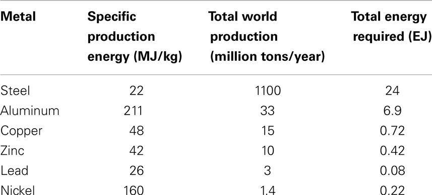

MineralQuestion-Bardi
Created Tuesday 02 February 2021 (21-02-02_14-52-57)
@2021 @materials
Bardi, Ugo (2013). The Mineral Question: how energy and technology will determine the future of mining. Frontiers in Energy Research 1(9). https://doi.org/10.3389/fenrg.2013.00009
Full Text
The mineral question: how energy and technology will determine the future of mining
Ugo Bardi
Dipartimento di Scienze della Terra, Università di Firenze, Firenze, Italy
Abstract
Almost 150 years after that Jevons (1866) published his paper “The Coal Question” a debate on mineral depletion has been ongoing between two main schools of thought: one that sees depletion as an important problem for the near future and another that sees technology and human ingenuity as making depletion only a problem for the remote future. Today, however, we have created intellectual tools that permit us to frame the problem on the basis of physical factors, in particular on the basis of thermodynamics. The present paper examines the problem of mineral depletion from a broad viewpoint, with a specific view on the role of energy in the mining and production processes. The conclusion is that energy is a fundamental factor in determining how long we can expect the supply of mineral resources to last at the present prices and production levels. The rapid depletion of our main energy resources, fossil fuels, is creating a serious supply problem that is already being felt in terms of high prices of all mineral commodities. Technology can mitigate the problem, but not solve it. In a non-remote future, the world’s industrial system will have to undergo fundamental changes in order to adapt to a reduced supply of mineral commodities.
Introduction
The question of how long the supply of mineral resources can last started being asked in mid nineteenth century (Jevons, 1866). Over the years, two poles of thought have developed. One emphasizes the limited amount of the available mineral resources and proposes that depletion will lead to a reduction of the supply in times short enough to be object of concern today (see e.g., Jevons, 1866; Meadows et al., 1972; Bardi and Pagani, 2007; Bardi, 2011; Mason et al., 2011). The other emphasizes technology and human ingenuity, arguing that depletion is not a fundamental problem, at least for the foreseeable future (see e.g., Zimmermann, 1933; Lambert, 2001; Bradley, 2004, 2007). In this second camp, some authors arrived to extremely optimistic statements; proposing that mineral resources will never be exhausted or will last billions of years (Simon, 1981).
Much of the debate has been based on contrasting estimates of the amounts of mineral resources defined as “extractable.” But the debate often misses a crucial element: mining requires energy. All processes that transform mineral resources into mineral commodities, from prospecting to beneficiation, require a steady supply of cheap and abundant energy. So, the problem of mineral depletion is strictly related to the availability of energy and here lies the problem. First, the world’s main sources of primary energy are of mineral origin (fossil fuels) and their gradual depletion is making energy more expensive (see e.g., Odum, 1998; Jakobsson et al., 2012). As a consequence, mining becomes more expensive as well. Then, mining requires more and more energy as the gradual depletion of high grade ores forces the industry to move to increasingly lower grade resource. These two effects combine in generating the problem: how long can we keep on producing at reasonable costs the large amounts of mineral commodities that the industrial economy requires?
In principle, if we could increase the energy supply without limits, there would be no limits to mining as we could recycle everything we use (Bianciardi et al., 1993). This is the concept of the “universal mining machine,” a term that indicates a hypothetical way of processing crustal rock or industrial waste that, in principle, would yield all the chemical elements needed in the desired amounts (Bardi, 2008). A related concept has been termed the “Thanatia Earth Model” by Valero and Valero (2012) or the “Crepuscular Planet” (Valero et al., 2011) referring to a future Earth where human mining has dispersed all the chemical elements from their ores to their average concentration within the Earth’s crust. But, obviously, mining the undifferentiated crust would require gigantic amounts of energy; far above anything we can manage today, to say nothing of the massive devastation of the planet, already considerably affected by the current practices of mining (Prior et al., 2012). Hence, the limits to mining derive mainly from the limits to the amounts of energy which we may assume to be available in the future. Seen in this light, the problem of depletion will become serious much before actually “running out” of any mineral, as already noted in early depletion studies (Jevons, 1866; Meadows et al., 1972).
However, it is also true that mining is not just a question of applying energy to some parts of the Earth’s crust. It is a complex process that depends on many factors; technological, economical, and environmental. So, how is the increasing need of energy caused by depletion going to affect production in the near term and medium term future? What role can improved technology have in reducing the energy needed for accessing otherwise inaccessible deposits? How is pollution going to limit extraction and what role can play technology in abating it? The present paper examines these questions on the basis of data and theoretical models. The conclusion is that the energy problem is a fundamental factor in limiting the supply of mineral commodities to the world’s economic system. Technology certainly can play a role in mitigating the problem, but it cannot, in itself, replace energy. At present, the depletion problem is already appearing in the form of high prices of all mineral commodities. This problem is likely to become more serious in the future.
Energy in the Production of Mineral Commodities
The term “mineral deposit” describes the occurrence of a chemical compound in the Earth’s crust in concentrations higher than the average. When a deposit is sufficiently large and concentrated to be economically exploitable, it is called “ore.” Other terms are used for some specific resources (e.g., “wells” for crude oil and gas and “seams” for coal) but all are part of the general idea that mineral resources can be exploited only when they can be found in sufficiently concentrated (or “high grade”) forms.
Transforming ores into mineral commodities consists in a series of processes that separate the ore from the embedding rock matrix and transform it into compounds of specific purity and chemical composition. We could say that mining is a multi-stage chemical reaction and, as such, it involves breaking and creating chemical bonds at all the stages of the process. All chemical reactions are characterized by a chemical potential that describes the balance of the energy gained and lost in rearranging chemical bonds. The function called “Gibbs Energy” is often used in chemistry to describe the tendency of a system to react and form specific chemical species. A more general measure of how far the system is from equilibrium can be obtained with the concept of “exergy” (see e.g., Szargut et al., 1988; Dincer and Cengel, 2001; Sciubba and Wall, 2010).
The exergy of mineral deposits can be referenced to a “zero level” state that corresponds to the average concentration of the elements of the ore in the crust (Stanek et al., 2010). The exergy of mineral deposits is larger than that of the zero level state as the result of energy provided in the remote past by complex geological processes which were generated by solar or geothermal energy, or both (Dill, 2010). The more concentrated and pure a deposit is, the larger its exergy. Mineral commodities are usually more concentrated and purer than ores, so have an even larger exergy. For a deposit to qualify as “ore,” the difference in exergy between the deposit and the mineral commodity to be produced must be provided at the expense of some energy source, normally fossil fuels. Obviously, the larger the exergy of the ore, the smaller the amount of energy necessary and hence the least costly the production of the mineral commodity will be.
In most cases, producing mineral commodities (e.g., turning copper sulfide ores into metallic copper) requires expending energy. However, some mineral resources have accumulated such a high amount of exergy as the result of past processes that returning them to the zero level state generates usable energy. This is the case of fossil fuels (oil, gas, and coal) which are mined for their ability of producing energy when returned to carbon dioxide dispersed in the atmosphere. This is also the case of the 235 isotope of uranium; the only fissile nucleus naturally present in significant amounts in the Earth’s crust.
Ideally, a complete accounting of the cost of producing mineral commodities should take into account the exergy and resource costs involved in the whole process (Sciubba, 2004). However, this is rarely done in the real world and, in most of the literature on the subject, only monetary and energy costs are considered. Such a practice has obvious problems: monetary costs change as a function of the vagaries of the market and even when energy units are used the problem is that different kinds of energies (e.g., thermal, mechanical, etc.) are not separated. For instance, diesel fuel used in mining can be characterized in terms of its chemical energy. However, when the fuel is used to generate mechanical power, the limited efficiency of the thermal engine must be considered. Not taking into account this difference may create considerable problems when describing actual industrial processes. In several cases, however, the differences between “energy” and “exergy” can be neglected as when, for instance, discussing the effect of varying ore grades on energy expenditures for extraction; assuming that the same extraction technology is used. Hence, in the present paper, the term “energy” will be normally used referring to amounts of energy which can be quantified in terms of prices and costs. Whenever possible, however, the different energy qualities involved will be specified.
Having stated this point, we can say that several factors affect the energy requirement for the mining of a mineral resource. As a first approximation, we can expect this energy to be inversely proportional to the concentration of the desired specific element or compound. In other words, halving the ore grade should lead to a doubling of the necessary energy for extracting the same amount of mineral. The data for actual minerals confirm this interpretation, for instance for gold (Mudd, 2007; Prior et al., 2012), copper (Harmsen et al., 2013), and several more resources (Valero et al., 2013). Rapid increases as a function of declining grade are also observed for other resources used for mining: water, chemicals, and more (Prior et al., 2012).
How fast the energy needed rises with depletion depends on the actual distribution of ores in the Earth’s crust. Here, the empirical “Lasky’s Law” states that there exists an inverse relationship between ore grade and the size of deposits (Lasky, 1950), an approximation that can be considered valid in many cases. In some cases, and in particular for oil resources, the relation follows a power law, i.e., is fractal (Turcotte, 1986). It has also been suggested that intermediate concentrations between mineral deposits and undifferentiated crust may be rare or even non-existing; a concept defined as the “mineralogical barrier” (Skinner, 1976, 1979). Such a barrier would provide a considerable obstacle to mining low concentration ores, but it appears to be still far away from the practical mining capabilities existing today. In any case, within the range of ores mined today, the variation of ore grade being mined as a function of time seems to be defined mainly by market factors rather than by geological ones.
We can now examine the various steps involved in the production of mineral commodities. Despite the many variations on the theme, some basic common features can be listed and examined. As a first subdivision, mining operations can be grouped in three main categories: (1) extraction, (2) materials handling, and (3) processing. Some data on the relative energy costs are reported for mining in the US by EERE (energy efficiency and renewable energy agency) (Mining Overview, 2002). Handling turns out to be the largest energy cost, as it accounts for 42% of the total consumed, with 87% in the form of diesel fuel. From this datum, we can conclude that diesel fuel accounts for at least 35% of the average energy cost of mining, at least in the US. Processing consumes 39% of the energy, of which crushing and grinding activities account for 75% of the total. The remaining 19% of energy in mining is consumed by extraction activities.
Let’s now examine more in detail the various steps of the production of mineral commodities with the objective of determining how energy use is affected by depletion. For the purpose of this discussion, we can take into account the following five steps:
- Exploration/prospection (locating exploitable mineral resources)
- Drilling/excavating (accessing underground mineral resources)
- Lifting/hauling (transporting minerals to processing facilities)
- Processing/beneficiation (separating useful minerals from the rock matrix)
- Smelting/refining (transforming minerals into metals or specific chemical compounds)
Let’s now describe how each step is related to energy.
Exploration/Prospection
Mineral deposits are unevenly distributed over the Earth’s surface as the result of past geological and bio-geological processes. “Exploration” and “Prospecting” both refer to the action of locating the presence of ores and deposits. Mineral exploration (Hronsky and Groves, 2008) normally refers to large scale, systematic examination of entire regions. Prospecting, instead, normally refers to actually locating exploitable deposits. The art of finding mineral ores is complex and based on a deep knowledge of the geological characteristics of the deposits being sought and on the processes that led to their formation in remote times. In some cases, the physical characteristics of the mineral can make prospecting relatively easy, such as for uranium, whose presence can be mapped by its natural radioactivity. In other cases, deposits can be detected by surface manifestations, such as when oil or gas deposits are revealed by the presence of bitumen pools or flammable gas exhalations. In many cases, however, prospecting relies on finding specific geological formations where it is known that a specific mineral can exist. For instance, in the case of petroleum and gas, it is possible to detect the presence of suitable underground “trapping” formations. In general, exploration and prospecting require energy for all the needed infrastructures, for transporting people and equipment in promising areas, and for performing a variety of physical tests, including for instance, exploratory drilling. In itself, the energy required for exploration and prospection is probably a minor factor in the energy cost of producing mineral commodities (Mining Overview, 2002). However the effectiveness of prospection does have an important effect related to the energy expended to explore promising regions which, however, turn out to be economically uninteresting (in oil exploration, they are called “dry holes”).
Drilling, Excavating, and/or Blasting
These terms refer to the operations needed to get at the mineral ores, which normally requires the removal of large amounts of rock since ores are rarely found in significant amounts at or close to the ground surface. However, it is also true that many kinds of ores tend to form as the result of surface or near surface processes, e.g., hydrothermal ones, so that large depths are often uninteresting for mining. Hence, there exist a finite range of depths where ores can be found. This range is not rigidly fixed and the concept of “second mineralization exploration space” refers to deposits located at depths higher than the conventional ones. In this respect, it has been estimated that during the past few decades the exploration depth has increased of some 50 m/year on the average (Pengda et al., 2008). In practice, most conventional mines don’t go below 1–2 km of depth. In the case of hydrocarbons (oil and gas) drilling can reach depths up to about 10 km, but normally extraction is performed at much lower depths. Drilling tunnels or, more commonly nowadays, working with the concept of surface (or “strip”) mining requires large amounts of energy used for removing huge volumes of bedrock. That is often accomplished with explosives, followed by the mechanical removal of the rubble. In general, the energy costs of these operations are expected to show an increase inversely proportional to ore grade if the depth of mining remains constant. But as it is likely that accessing lower grade resources requires also going deeper, the relationship is likely to be steeper. The data for copper indicate that the energy requirement for open pit copper mining increases of a factor of 2.9 MJ/kg Cu per 100 m depth increase for an average dept of about 500 m (Harmsen et al., 2013). However, the relationship depends on the volume of overburden that has to be removed and, since open pits mines are cone-shaped, the amount of energy needed is likely to increase faster than proportionally to depth.
Lifting and Hauling
These terms refer to transportation of the ore from the mine to ground level and then to processing facilities, typically by special trucks powered by diesel engines (Mining Overview, 2002). The energy cost of transportation and hauling is often the largest in the whole mining operation (Norgate and Rankin, 2002). Only in some cases it can be small as, for instance, when the production of a coal mine is used to fuel for an electric plant located very close to it. In this case, it is less expensive to transport energy in the form of electric power using the grid than to transport coal on roads or rail. Again, the energy cost of this operation is expected to be proportional to the volume of mineral extracted and, hence, inversely proportional to ore grade.
Processing and Beneficiation
These terms indicate the separation of the useful minerals from a matrix usually referred to as the “gangue.” This operation normally requires large amounts of energy for crushing and pulverizing the rock (“comminution”) (Wills, 1990) and for chemical or physical processes needed to leach the mineral out (Valero and Valero, 2012). Only in very special cases this operation is not necessary. In the early times of mining, minerals could be found already separated by the matrix that had contained them, such as in the case of gold nuggets found in rivers. Also in the case of hydrocarbons such as oil and gas, the different fluidity of the mineral (gaseous or liquid) and of its matrix (solid) often permits separation without the need of extra energy, exploiting the internal pressure of the well. However, once the internal pressure ceases to be sufficiently high, pumping becomes necessary and that is an energy cost. Depending on the viscosity of the fluid and on the permeability of the rock, extraction may also require complex and expensive operations such as hydraulic rock fracturing (“fracking”) by injection of high pressure fluids in the well. In other cases, a solid mineral can be separated by the matrix by “in situ” solubilization processes, e.g., by means of acid leaching. It is a method of mining used, for instance, for uranium (Eligwe et al., 1982) and gold (Martens et al., 2012). Generally speaking, the energy cost of all these operations is expected to be proportional to the volume that needs to be processed and, therefore, it is inversely proportional to the grade of the resource. Often, these processes also create considerable pollution problems, which add to the overall cost of the operation.
Smelting/Refining
In many cases, the mineral obtained by the processes described above is in a chemical form that requires further processing. For most metals this phase takes the name of “smelting” and it consists in transforming ores in the form of oxides or sulfides into pure metals. This operation usually requires reducing agents such as coal for smelting iron ores. Some sulfides can be transformed into pure metals by roasting in air while several metals are obtained nowadays by electrochemical methods, for instance in the case of metallic aluminum obtainable from oxides. All these processes require energy and the more modern ones – electrochemical ones – require the most energy. Note in this context that electric power is the highest quality energy available and therefore the one with the highest exergy level. As a consequence, care should be taken when comparing different smelting processes using different forms of energy. Many metals or other chemical compounds require further processing before they can be marketed as commodities. There exists a large variety of such processes that usually tend to purify materials or to add components to produce alloys of commercial interest – an example is the addition of chromium and carbon to iron (as well as other elements) to transform it into stainless steel. Some minerals require highly sophisticated (and energy expensive) purification methods. An example is silicon, which exists on the market in several purities: as “metallurgical grade” (ca. 99.7% pure), as “solar grade” (typically 99.999% pure), and as “electronics grade” (99.9999% pure or even more). In some cases, isotopic fractioning is necessary to produce marketable commodities, such as when uranium is enriched in the fissile isotope U(235) in order to be usable in the current nuclear energy technology (or to manufacture nuclear weapons). All these operations are performed on already beneficiated material, therefore the energy needed is not dependent on the original ore grade.
From this discussion, we can conclude that the energy needed to extract and produce a mineral resource depends on the sum of two factors: one is related to ore grade (e.g., lifting, hauling, crushing, etc.) and it is normally inversely proportional to it. The other is mainly related to the chemical energy of the compound being extracted (e.g., smelting) and it is not directly related to ore grade. In practice, extracting a resource and transforming it in a mineral commodity often means to minimize the energy needed as a function of these two terms. This amount of energy can be quantified by the method known as life-cycle assessment (LCA). Several such assessments have been performed for various minerals (e.g., Norgate and Haque, 2010). The results indicate that, for some metals, such as copper, the energy requirement for mining and beneficiation is prevalent. For others, such as aluminum, the reduction process that transforms the oxide into a metal is the most energy expensive operation. Considering copper as an example, at present, the energy needed to produce copper metal from its ores is in the range 30–65 MJ/kg (Norgate et al., 2007) with an average value of 50 MJ reported by Ayres (2007). Using the latter value, we find that we need about 0.75 EJ for the world’s copper production (15 million tons/year).
The Table 1 lists the specific energy needed for the production of some common metals, together with the total energy requirement for the world production in recent times (adapted from Bardi, 2011).
TABLE 1

Table 1. Specific and total energy of production for some metals.
The sum of the energies reported in the table above makes a total of more than 30 EJ. Considering that many more mineral commodities are produced in the world and that the global yearly production of primary energy is ca 500 EJ (Statistical Review of World Energy, 2013), we may conclude that the energy used by the mining industry is in the range of 5–10% of the total primary energy produced in the world, a value consistent with other estimations (Goeller and Weinberg, 1976; Rábago et al., 2001).
Clearly, mining is energy intensive and the analysis reported so far indicates that the need of energy is deeply embedded within the very concept of mining. All mining operations are thermodynamically uphill (exergy intensive) as the result of the need to fight against the dispersion of the materials mined in a rocky matrix and of smelting useful metals from their mineral form of, typically, oxides and sulfides. In this series of operations, the billions of years of geological history of the Earth have provided a substantial advantage by concentrating minerals in the form of ores, thereby greatly reducing the need for energy. But high grade ores are being gradually depleted and the need for energy in extraction increases. The following section will examine how this phenomenon is affecting the economy today and how it may affect it in the future.
Mineral Extraction and the Economy
Economic theories relative to mineral extraction go back to Ricardo et al. (1819) who examined for the first time the expected behavior of the price of mineral resources as a function of depletion. A more detailed theory was later developed by Jevons (1866). Both Ricardo and Jevons operated within the paradigm of economics as the “dismal science,” under the influence of earlier work by Thomas Malthus; that is on the hypothesis of resource scarcity. They both arrived to the conclusion that gradual depletion of mineral ores would make exploitation more expensive.
In a similar vein, in later times Harold Hotelling developed the model that is known today as the “Hotelling Rule” (Hotelling, 1931). This model is extremely simplified, for instance it assumes that the extraction cost of the resource is zero and that it is not affected by depletion. Further, the model assumes that the firm that extracts the mineral has the complete monopoly of extraction, perfect knowledge of the amounts available, and wants to maximize its long term returns. By means of these assumptions, Hotelling could show that the firm can maintain a constant revenue over a finite time if the price of the resource rises at a rate determined by the current discount rate (assumed to be constant) and if production declines exponentially.
Hotelling’s model proved to be popular over the years. It is still well known today and it appears to be at the basis of many commonly used price forecasting models. However it has been always difficult to use the model to describe historical trends. In many cases, the prices of mineral commodities did not show a gradual growth, but rather a “U-shaped” trend (Slade, 1982). Furthermore, the production of most mineral resources didn’t follow the gradual decline predicted by the model but an increase that was often found to be approximately exponential. Rather than attributing these discrepancies to limitations of the model, several authors concluded that the resource had been exploited only to a minimal fraction of the amount available (e.g., Houthakker, 2002). Others concluded that falling prices showed that technological progress made the concept of “limited resource” meaningless. Exemplary in this sense is Julian Simon who, in his book “The ultimate resource” (Simon, 1981), arrived to the conclusion that the worldwide mineral resources are “infinite” on the basis of the price trends of five commodities over a couple of decades. In practice, however, it is more likely that Hotelling’s model does not provide a good description of real world trends, where firms do not have a perfect knowledge of the amount of resources available, are not “perfect monopolists” and do not usually work with the objective of long term profit maximization (see Reynolds, 1999; Hart and Spiro, 2011; Reynolds and Baek, 2012).
Other models of mineral production take different approaches. One of the most common ones is the “functional model,” also known as the “resource pyramid” that was perhaps described for the first time by Erich Zimmermann in a book titled “World Resources and Industry” (Zimmermann, 1933). This model is part of a more general school of thought in economics known as the “Austrian school” which, when dealing with mineral resources, tended to downplay the effects of depletion, emphasizing instead human ingenuity and creativity (Bradley, 2007). So, the functional model starts with the definition of “mineral resource,” noting that it cannot be considered as a fixed amount but as something that depends on human needs and on human resources. In particular, the model starts from the geological observation that mineral deposits tend to exist in amounts which are inversely proportional to grade [Lasky’s law (Lasky, 1950)]. In other words, low grade resources are more common and more abundant than high grade ones. It is then assumed that technology can effectively counter the higher costs of accessing lower grade ores, a phenomenon also called the result of the “Factor X” (Petrie, 2007). The final result is that there is no such thing as “running out” of anything; on the contrary, better technology makes it possible to access larger and larger stocks of resources. Hence, the model proposes the counter-intuitive effect that, as we extract resources, they become more abundant. That is, we may be “running into” resources rather than “running out” of them (Odell, 2008). This phenomenon is also commonly called “resource creation.”
The functional model is the backbone of a certain way of viewing the future of the mineral industry that, indeed, has seen during the past decades both increasing production and increasing amounts of listed recoverable resources. The latter phenomenon is due to two distinct factors: the progress of exploration and increasing market prices. Higher prices “create resources” not in a physical sense but in the sense that it becomes profitable to mine from lower grade resources. However, there is a problem: higher prices can also reduce the demand and, as a result, defeat the apparent abundance created by the increase. To counter this objection, the functional model normally assumes that in all cases better technology will lower the need of energy. Unfortunately, this point has never been demonstrated, except in terms of generic claims on human ingenuity (see e.g., Simon, 1981; Bradley, 2004).
A different and more quantitative attempt of modeling mineral extraction is based on the approach called “neoclassical economics.” This line of modeling started with a rather famous paper by Solow (1956). The concept of Solow’s idea is that the world’s economy can be described in terms of a “production function” that takes into account the main parameters affecting the output of the economic system. One commonly employed production function has a form termed “Cobb–Douglas” and, in its simplest form, it can be written as Ayres (1998).
Y = LaKb,
where “Y ” is the economic output of the system, “L” is labor, and “K” is capital. “a” and “b” are adjustable exponents; sometimes called “elasticities.” These exponents must be smaller than one in order to ensure diminishing returns to scale; a desirable characteristic if the function has to describe the real world. In his 1956 paper, Solow (1956) found that it was impossible to combine historical data with this function in order to fit the actual output of the US economy. Therefore, he added to the function an adjustable parameter as a multiplier that, later on, took the name of “Solow’s Residual.” This factor is also called “total factor productivity” (TFP) and it is often equated with “technological progress.” Solow’s model, therefore, is claimed to describe how technology can overcome material limitations and insure the growth of the economy in spite of mineral depletion. Indeed, Solow (1974) himself stated that “The world can, in effect, get along without natural resources,” on the basis of the assumption that, in the production function, a decline in one of the factors can be compensated by an increase in another, e.g., the TFP. Starting with Solow’s ideas, a more detailed model was developed by Stiglitz (1974a,b) and later discussed by Nordhaus (1992). According to Nordhaus, the production function can be written as:
Y = HLΩRΛTΓKΔ
The L, K, and Y symbols are adjustable parameters defined as “elasticities.” Note that the function now contains a parameter standing for “land” (T), one for the “flow of mineral resources” (R), and one for “human capital” or “level of technology” (H). It is clear from the treatment in Nordhaus’ paper that the “H” factor also has a variable parameter as exponent (Nordhaus, 1992).
For the R parameter, Nordhaus proposed an exponentially decaying form as R = μS*e−μt, where S* is the initial endowment of the resource and μ an adjustable parameter, assumed to be larger than zero. Such a choice seems to be influenced by the results of the Hotelling rule, as described earlier on in this section. In the long run, this choice generates a gradual decline of the world’s economic output. Obviously, there is a problem here: this behavior is the opposite of what has been observed for the real world for at least a century. So, the model counters the decline with the growth of the “H” factor (technology). This factor is assumed to grow exponentially as eht with “h” an adjustable parameter assumed to be proportional to “progress.” In his paper, Nordhaus (1992) shows that if h is larger than 0.0025 (one quarter than 1%) then its effect is sufficient to keep production growing even in the presence of declining mineral resources and other constraints. It can, therefore, fit the observed growing trends of the world economy up to the present time.
!!! Discussion of Ayres-Warr 2009, criticism included
W:Purkautuminen , W:Tasaisempi valta:1 Miksi olemme liemessä
The Solow model and its subsequent refinements are interesting attempts to quantify how technology affects production and how it can overcome depletion. However, there are serious problems with this approach. One is that neither the R and h factors are actually measurable alone, only their combination can be deducted from historical data. So, we have no direct evidence that the h factor actually exists, nor that it can be equated to “technological progress.” Indeed, it has been shown that if the increasing use of energy in the world system is factored into the production function, then there is no need of the abstract entity called TFP to justify the growth of mineral production in the world (Hall et al., 2001; Ayres, 2007; Warr and Ayres, 2010; Ayres and Voudouris, 2013); see also the criticism by Binswanger (1998) and Bastianoni et al. (2009). Without energy and natural resources, there cannot be growth and technology, alone, cannot create resources that don’t exist (Daly, 1997).
Finally, we can discuss in this section the family of models based on “system dynamics” and which attempt to describe the evolution of the economic system as the result of a number of related factors that include renewable and non-renewable natural resources, but also population, pollution and more. Qualitatively, the origin of these models can be found in the work of Jevons (1866) and his “The Coal Question”. Jevons did not explicitly link the cost of extraction to energy, but his considerations can be read in this sense. The limits to coal mining, according to Jevons, are determined by diminishing returns. With the gradual running out of the least expensive coal resources (low depth, high thickness of the vein, and other factors), the industry is forced to move toward more expensive resources, having to dig deeper or to exploit thinner veins. Jevons concluded that this effect would eventually make coal too expensive for the British industry. At that point, Jevons surmised that production would decline; a prediction that was realized in England around 1915 (Bardi, 2010).
Jevons didn’t use the term “progress” in the modern sense, but he referred to technological improvements as “inventions” and discussed their effect at length. His conclusion in this respect is known as the “Jevons paradox” and it states that technological improvements do not lead to a lower consumption of resources. On the contrary, the reduced costs derived from better technology lead to a higher consumption and faster depletion. Modern versions of the Jevons paradox are referred to as the “rebound effect” or the “Khazzoom–Brookes postulate” (Saunders, 2000).
In modern times, quantitative models based on the same concepts were proposed, for instance, by Jay Forrester and by the group of researchers who performed the 1972 study titled “The Limits to Growth” (Forrester, 1971; Meadows et al., 1972). These models did not take into account energy as a disaggregated parameter; rather, energy was embedded into the more general “non-renewable resources” stock, assumed to be finite. Nevertheless, the role of energy in the model is clear, although implicit. These models can be seen as thermodynamic systems that describe the degradation of a stock of energy in a number of stages. Resources are the stock at the highest thermodynamic potential, which gradually transforms into lower potential stocks: first industrial capital and population and, in the end, into pollution – the lowest potential of all (Bardi, 2013b) (see also Garrett, 2011a,b). This evolution can be seen as driven by the progressively lower “EROEI” (Energy return for energy invested) of the exploitation of fossil fuels (Bardi et al., 2011; Murphy and Hall, 2011). In general, these models generate “bell shaped” curves (although not necessarily symmetrical ones) for the evolution of the various stocks and flows (e.g., industrial production) in agreement with the early empirical model proposed by Hubbert (1956). These models are notable also because they are the only ones among those discussed so far which take explicitly into account the effect of pollution; a problem that cannot be neglected any more today and that is already causing serious problems, especially in relation to climate change. In the system dynamics approach, pollution is a stock that grows proportionally to the capital stock but also draws resources away from the capital stock as the result of the need of investments to fight pollution. The end result is that pollution hastens the decline of the production of mineral resources.
These models do not, normally, assume the existence of an endogenous “technological progress” parameter, and that has generated some criticism (as discussed in Bardi, 2011). However, it is not true that these models cannot take into account the effect of technological change. Quite to the contrary, these effects were taken into account from the very first version of “The Limits to Growth” study (Meadows et al., 1972). Increased resource availability and increasing capability of fighting pollution were considered in the calculations as exogenous factors and both can be seen as the effect of technological progress. The results of runs based on these assumptions are that the availability of larger amounts of resources leads to a more rapid growth of production and pollution and, eventually, to a more rapid crash of the stocks. In order to rig the models in such a way to avoid collapse, we need extremely optimistic assumptions that are equivalent – in practice – to the “universal mining machine” discussed earlier on in the present paper.
This description of several decades of modeling efforts in resource depletion cannot be considered as exhaustive but it should provide at least a summary of the most common viewpoints in this field. It appears that there exist several models that deal with the effects of mineral depletion on the world’s economy, mostly incompatible with each other. Many of these models are highly abstract, some are not quantitative, several don’t take into account fundamental physical parameters such as energy. So far, there does not appear to exist an agreement on how depletion and energy availability are going to affect the real world and it appears unlikely that such an agreement can be reached on the basis of discussions about theoretical models. In the following, the question will be examined more in detail by examining how, in practice, energy and technology affect mineral production.
Technology and Energy in Mining
The concept of “technological progress” is relatively modern; just as it is modern the concept that progress is expected to grow all the time and to bring us a better and better world. The first explicit statement that progress was expected to keep growing in a continuously increasing trend goes probably back to the golden age of science fiction Heinlein (1966). Trust in technological progress does not seem to have abated since that time. Nevertheless, the concept of “technology” is complex and hardly definable in terms of simple parameters that can be plugged into a theoretical model. For what we are interested here; mineral depletion, we can list some basic forms of technology that can influence the situation.
- Technology for increasing the efficiency of extraction.
- Technology for increasing the efficiency of consumption (including recycling and reusing).
- Technology for replacing scarce resources with abundant ones (substitution).
- Technology in the form of sudden breakthroughs (“changing the rules of the game”).
These cases can now be examined, one by one.
Technology for Increasing the Efficiency of Extraction
This kind of technological progress is a cornerstone of the “functional model” described in a previous section. In this area, we can identify several examples of new technologies applied to extraction. In a number of cases, the new technology involves radical changes in the way a resource is extracted. An example is the use of cyanide solutions to recover gold (Logsdon et al., 1999). This technology started to be used in the twentieth century, replacing older methods based on manual separation and on the use of mercury to form an amalgam. The cyanidation method turns out to be more effective in exploiting very low grade gold ores, allowing to recover the gold even when the gold particles are not visible by the naked eye. However, the effectiveness of the method doesn’t mean that it is energy-efficient. LCA calculations show that gold cyanidation is more energy expensive and more polluting for the same weight recovered than most other processes to recover metals from ores (Norgate and Haque, 2012). It is only the relatively small amount of gold produced worldwide that makes the overall damage of cyanidation on the environment not so high as that of other metals. Even so, alternatives to cyanidation are actively sought (Hilson et al., 2006), although so far without success. The case of gold illustrates a typical situation with new mining technologies. The new technology permits to access lower grade resources, but it is not necessarily leading to a reduction in the amount of energy needed.
A different kind of technological progress consists in maintaining the current processes, but modifying them in order to use less energy. This result can be obtained by such actions as reducing the lighting, reducing the energy used in air conditioning, changing to variable speed drives to reduce energy, reducing energy related to compressed air leaks. It is reported that savings of the order of 20–30% can be obtained (Mining Industry Energy Bandwidth Study, 2007). In some cases, specific operations such as milling of ores could be improved to the level of saving more than 50% of the energy (Wills, 1990; Sterling, 2008). Technology plays an obviously important role in these efforts as, for instance, in the development of more efficient motors for pumps, the use of LED lights instead of conventional ones, and more. However, these are all technologies based on incremental improvements which are subjected to diminishing returns. That is, large improvements are possible in the case of inefficient producing systems, but once that the process has been optimized, further improvement are difficult and expensive.
Technology for Increasing the Efficiency of Consumption (Including Recycling)
There are several procedures proposed and in use for reducing the need of minerals in the industrial society. In general, these procedures involve using smaller amounts of materials, making products more durable and reusable, and recycling the materials contained in discarded products. It has been claimed, for instance, that in many cases a reduction of a factor of five in the amounts of materials required can be obtained (Von Weizsäcker et al., 2009) whereas other proposals involve “closing the cycle” of the materials used by means of redesigning the whole process of production and use [see e.g., the “cradle to cradle” proposal (Schnitzer et al., 2007)].
Recovering minerals from waste is a well established procedure, although not always possible and never 100% efficient. For instance, recovering metals from incinerated urban waste is normally difficult and expensive; even though possible in some cases (Zhang and Itoh, 2006). The idea of landfills as “mines” has been often proposed, but it is not easily implemented even though, recently, progress has been made in this field (Krook et al., 2013). It is easier to develop specific procedures to separate waste at the origin and process relatively homogeneous waste. For instance, the materials contained in printed circuit boards are often recovered and recycled (Xiu et al., 2013). There exist also specific lines of recycling for most common materials; typically metals. According to the USGS data, in the United States the average recycling rate is in the range of 30–50% in weight for the principal metals produced (Papp, 2010). The maximum recycling rate reported by Papp is for lead: 80.5% in 2009, subsequently slightly reduced to 79% in 2010. Some metals, iron, aluminum, and magnesium are recycled at levels near 50%; several other such as copper are recycled at around 30%. Less common metals have lower recycling rates and several are not recycled at all (Graedel et al., 2011). In this field, new technologies can surely play an important roles, but mainly an incremental one, subjected to diminishing returns.
In general, all forms of recycling suffer of the diminishing return problem: recovering discarded materials becomes more expensive (in terms of energy) as we get closer to closing the cycle. That doesn’t mean that 100% recycling is not possible. After all, land plants have been “mining” the Earth’s crust for hundreds of millions of years and they never ran out of the minerals they needed. It means, however, that closing the cycle without changing the present manufacturing methods would be extremely energy expensive; in practice impossible today. If such a result is sought, manufacturing technologies would have to be redesigned in such a way to use materials and processes compatible with a reasonable amount of energy used in closing the cycle.
Technology for Replacing Scarce Resources with Abundant Ones (Substitution)
The concept of “substitutability” in industrial processes was analyzed for the first time by Goeller and Weinberg (1976) as a way to overcome the mineral depletion problem. This paper was probably the first to address in a comprehensive way the possibility of substituting rare and depletable mineral resources with common ones in the crust which, in principle, wouldn’t be easily depleted even in the long term. It proposed, for instance, to substitute copper wiring with aluminum wiring. As aluminum is a common element of the Earth crust; it would seem to be impossible to ever run out of it. The proposals by Goeller and Weinberg were reviewed, among others, by Ayres (2007) and Bardi (2011). The general conclusion is that substitution is often – but not always – possible, but it is also expensive in terms of the energy required. For instance, substituting copper with aluminum requires more than four times as much energy for the same weight. Even taking into account that the density of aluminum is lower, and therefore more current can pass for the same weight, the disadvantage for aluminum is still of a factor of two in terms of the energy necessary for manufacturing a wire having the same electrical properties. In some cases, substitution appears to be an especially promising strategy, as new technologies permit to dispense of some materials altogether. An interesting example is the development of digital photography that has led to the near complete disappearance of silver containing photographic film. That, however, has led to no discernible slowdown in the production of silver from mines (Kramer, 2013). It appears that the silver that was made available in the market by the decline of the use in photography was used for other purposes. A good illustration that the so called “Jevons’ paradox” is not a paradox but a common occurrence (Jevons, 1866).
Technology in the Form of Sudden Breakthroughs
The concept of “technological breakthrough” is familiar to everyone, but how should it be interpreted as applied to mineral production? As mentioned in a previous section, the mining process can be seen as a multi-stage chemical reaction. Rearranging chemical bonds requires energy and the basic principles of thermodynamics insure that there exists a minimum amount of energy that must be spent in order to transform ores them into mineral commodities. Whatever breakthrough we can imagine in this field, it must still obey the laws of physics and, in particular, the laws of the conservation of energy. Minerals cannot be obtained for free.
Breakthroughs in mining might involve radically changing the sources of minerals, away from traditional ores. Some proposals in this sense are discussed in Bardi (2013a), but it turns out that they are always expensive in terms of the energy needed. Such is the case, for instance, of extracting ions from the oceans, mining the asteroids, and creating heavy elements from light ones by nuclear reactions. Therefore, the only breakthrough that could beat depletion forever would be something that could produce large amounts of energy at low costs: that would be equivalent to creating a true “universal mining machine” that would be able to recover mineral commodities from ordinary rock. The possibility of such a development is often associated to new forms of nuclear energy and, indeed, in their 1976 paper on sustainability, Goeller and Weinberg (1976) took as an assumption the fact that in relatively short times the world’s energy system would have been running on plutonium produced in “fast breeding” reactors. However, the plutonium based economy never materialized and, today, the production of nuclear energy is declining, a condition that can be attributed, at least in part, to the depletion of uranium mineral resources (Zittel et al., 2013). Even though renewable energy may largely replace fossil fuels in the future (Jacobson and Delucchi, 2011), it can hardly be imagined that renewables could provide the “quantum jump” that would lead us to being able of mining the undifferentiated Earth’s crust or other bodies of the solar system. It is not possible to rule out that the promises of the 1950s in terms of cheap and abundant nuclear energy will someday materialize, but it is safe to say that betting on that doesn’t look promising (Dittmar, 2012). Technology produces no miracles, despite the most valiant efforts (Turiel, 2011).
This discussion cannot be exhaustive, but it has highlighted how technology should be discussed in view of real cases and not as a simple and non-independently measurable factor that enters highly aggregated models. If we break down the process of producing mineral commodities in its details, we see that there are many steps in which improved technology can reduce the need of energy or generate new processes which need smaller amounts of precious minerals. However, these are all approaches that are governed by the principle of diminishing returns. Technological progress itself seems to be affected by diminishing returns, as reported, for instance by Ayres (1998) and Tainter (2006). So, technology can surely mitigate the depletion problem but cannot, by itself, substitute energy.
Conclusion
The various operations of producing mineral commodities are energy expensive because of the laws of physics: we need energy to break the chemical bonds that keep rock together, that bind atoms together, to lift and haul materials, and for more forms of processing. The fact that we can do that with the amount of primary production that we can manage today is due to the “energy loan” provided by geophysical processes that have used solar or geothermal energy over very long times in the past in order to lift the ores we use today to a sufficiently high exergy level. But, in the long run, we must repay that loan one way or another. Ore depletion is gradually transforming the Earth into the “Thanatia” world where all minerals are dispersed at their average concentration in the Earth’s crust (Valero and Valero, 2012). We are still far away from such a world, but in the long run it is unavoidable if we keep on mining the way we have been doing up to now.
In addition to the depletion problem, we must also take into account that the pollution produced by mining tends to increase as lower concentration ores are exploited. This kind of pollution is often cumulative and it persists in the environment for long times, as it is the case, for instance, of heavy metals and of carbon dioxide (CO2). As we go on mining, even at reduced rates, this cumulative pollution will become more and more a burden in terms of damage done to the environment and to society in general. In some cases, pollution may be a more important factor than depletion in forcing the industry to reduce the production of a mineral commodity; this has been the case, for instance, of mercury which has been partly phased out of the world’s industrial system because of its poisoning effects (Bardi and Pagani, 2007). About fossil fuels, the debate is still ongoing on whether production will decline because of depletion and, therefore, ease or even solve the climate change problem or, rather, climate change will generate economic and political constraints that will force a decline in production. Several studies have been performed on this subject (e.g., Brecha, 2008; Kharecha and Hansen, 2008; Penuelas and Carnicer, 2010; Verbruggen and Marchohi Al, 2010; Zecca and Chiari, 2010; Schaltegger et al., 2012) without arriving to a definitive conclusion. Nevertheless, the ongoing increase of the CO2 concentration in the atmosphere indicates that we should see climate constraints as more important than depletion in forcing a slowdown in the production of fossil fuels.
In this context, the term “technology” is often used as the miracle solution that will forever eliminate all fears of depletion and, at the same time, solve all pollution problems. Indeed, some current theories attempt to quantify how technology can increase production of declining mineral resources and some claim that depletion can be always overcome in this way. In practice, when the process of extraction and production is examined in detail, we see that there are no simple shortcuts that can bypass the basic physical factors involved. Unless we witness a true breakthrough that could substantially and rapidly increase the world’s production of energy (without increasing pollution!), we must resign to the fact that the production of mineral commodities is destined to decline in the future or – which is the same – mineral commodities are going to continue their trend of increasing prices. In the future, the industrial society will have to learn how to function with a reduced supply of mineral resources: it can be done by becoming much more efficient and by using renewable materials and renewable sources of energy. It will also have to learn how to efficiently recycle resources in such a way to close – as much as possible – the production cycle.
Conflict of Interest Statement
The author declares that the research was conducted in the absence of any commercial or financial relationships that could be construed as a potential conflict of interest.
Acknowledgments
The author is grateful to Mr. Stefano Caporali for his suggestion and comments on this paper.
References
Ayres, R. (2007). On the practical limits to substitution. Ecol. Econ. 61, 115–128. doi:10.1016/j.ecolecon.2006.02.011 Available at: http://www.sciencedirect.com/science/article/pii/S0921800906000838 [accessed August 16, 2013]
CrossRef Full Text
Ayres, R., and Voudouris, V. (2013). The economic growth enigma: capital, labour and useful energy? Energy Policy 64, 16–28. doi:10.1016/j.enpol.2013.06.001 Available at: http://www.sciencedirect.com/science/article/pii/S0301421513004783 [accessed August 24, 2013]
CrossRef Full Text
Ayres, R. U. (1998). Technological progress: a proposed measure. Technol. Forecast. Soc. Change 59, 213–233. doi:10.1016/S0040-1625(98)00029-8
CrossRef Full Text
Bardi, U. (2008). The oil drum, Europe, the universal mining machine. Oil Drum Available at: http://www.theoildrum.com/node/3451 [accessed August 24, 2013]
Bardi, U. (2010). The dark side of coal – some historical insights on energy and the economy. Oil Drum Eur. Available at: http://www.theoildrum.com/node/6224 [accessed August 23, 2013]
Bardi, U. (2011). The Limits to Growth Revisited. Springer. Available at: http://books.google.com/books?hl=en&lr=&id=Gj0RmQWGfXcC&pgis=1 [accessed December 2, 2012]
Bardi, U. (2013a). Der geplünderte Planet. Neuausg: Oekom.
Bardi, U. (2013b). Mind sized world models. Sustainability 5, 896–911. doi:10.3390/su5030896
CrossRef Full Text
Bardi, U., Lavacchi, A., and Yaxley, L. (2011). Modelling EROEI and net energy in the exploitation of non renewable resources. Ecol. Model. 223, 54–58. doi:10.1016/j.ecolmodel.2011.05.021
CrossRef Full Text
Bardi, U., and Pagani, M. (2007). Peak minerals. Oil Drum. Available at: http://www.theoildrum.com/node/3086 [accessed June 12, 2013]
Bastianoni, S., Pulselli, R., and Pulselli, F. (2009). Models of withdrawing renewable and non-renewable resources based on Odum’s energy systems theory and Daly’s quasi-sustainability principle. Ecol. Model. doi:10.1016/j.ecolmodel.2009.04.014 Available at: http://www.sciencedirect.com/science/article/pii/S0304380009002671 [accessed November 5, 2013]
CrossRef Full Text
Bianciardi, C., Tiezzi, E., and Ulgiati, S. (1993). Complete recycling of matter in the frameworks of physics, biology and ecological economics. Ecol. Econ. doi:10.1016/0921-8009(93)90026-3 Available at: http://www.sciencedirect.com/science/article/pii/0921800993900263 [accessed November 5, 2013]
CrossRef Full Text
Binswanger, H. (1998). Making sustainability work. Ecol. Econ. doi:10.1016/S0921-8009(97)00065-7 Available at: http://www.sciencedirect.com/science/article/pii/S0921800997000657 [accessed November 5, 2013]
CrossRef Full Text
Bradley, R. L. (2007). Resourceship: an Austrian theory of mineral resources. Rev. Aust. Econ. 20, 63–90. doi:10.1007/s11138-006-0008-7
CrossRef Full Text
Bradley, R. L. J. (2004). Are We Running Out of Oil?. Available at: http://perc.org/articles/are-we-running-out-oil [accessed August 23, 2013]
Brecha, R. (2008). Emission scenarios in the face of fossil-fuel peaking. Energy Policy doi:10.1016/j.enpol.2008.05.023 Available at: http://www.sciencedirect.com/science/article/pii/S0301421508002383 [accessed October 4, 2013]
CrossRef Full Text
Daly, H. E. (1997). Georgescu-Roegen versus Solow/Stiglitz. Ecol. Econ. 22, 261–266. doi:10.1016/S0921-8009(97)00080-3
CrossRef Full Text
Dill, H. G. (2010). The “chessboard” classification scheme of mineral deposits: mineralogy and geology from aluminum to zirconium. Earth Sci. Rev. 100, 1–420. doi:10.1016/j.earscirev.2009.10.011
CrossRef Full Text
Dincer, I., and Cengel, Y. (2001). Energy, entropy and exergy concepts and their roles in thermal engineering. Entropy 3, 116–149. doi:10.3390/e3030116 Available at: http://www.mdpi.com/1099-4300/3/3/116 [accessed October 3, 2013]
CrossRef Full Text
Dittmar, M. (2012). Nuclear energy: status and future limitations. Energy 37, 35–40. doi:10.1016/j.energy.2011.05.040
CrossRef Full Text
Eligwe, C., Torma, A., and Devries, F. (1982). Leaching of uranium ores with the H2O2 Na2SO4 H2SO4 system. Hydrometallurgy 9, 83–95. doi:10.1016/0304-386X(82)90055-X
CrossRef Full Text
Forrester, J. (1971). World Dynamics. Available at: http://documents.irevues.inist.fr/handle/2042/29441 [accessed June 3, 2013]
Garrett, T. (2011a). Are there basic physical constraints on future anthropogenic emissions of carbon dioxide? Clim. Change doi:10.1007/s10584-009-9717-9 Available at: http://link.springer.com/article/10.1007/s10584-009-9717-9 [accessed September 12, 2013]
CrossRef Full Text
Garrett, T. (2011b). No way out? The double-bind in seeking global prosperity along with mitigated climate change. Earth Syst. Dyn. Discuss. doi:10.5194/esdd-2-315-2011 Available at: http://www.earth-syst-dynam-discuss.net/2/315/2011/ [accessed September 12, 2013]
CrossRef Full Text
Goeller, H., and Weinberg, A. (1976). Age of substitutability: what do we do when the mercury runs out. Sci. States. Available at: http://www.osti.gov/energycitations/product.biblio.jsp?osti_id=7353502 [accessed August 16, 2013]
Graedel, T. E., Allwood, J., Birat, J.-P., Reck, B. K., Sibley, S. F., Sonnemann, G., et al. (2011). Recycling Rates of Metals. Available at: http://www.unep.org/resourcepanel/Portals/24102/PDFs/Metals_Recycling_Rates_110412-1.pdf
Hall, C., Lindenberger, D., and Kümmel, R. (2001). The need to reintegrate the natural sciences with economics: neoclassical economics, the dominant form of economics today, has at least three fundamental flaws. Bioscience. doi:10.1641/0006-3568(2001)051[0663:TNTRTN]2.0.CO;2 Available at: http://www.bioone.org/doi/abs/10.1641/0006-3568(2001)051[0663:TNTRTN]2.0.CO;2 [accessed August 24, 2013]
CrossRef Full Text
Harmsen, J. H. M., Roes, A. L., and Patel, M. K. (2013). The impact of copper scarcity on the efficiency of 2050 global renewable energy scenarios. Energy 50, 62–73. doi:10.1016/j.energy.2012.12.006
CrossRef Full Text
Hart, R., and Spiro, D. (2011). The elephant in Hotelling’s room. Energy Policy 39, 7834–7838. doi:10.1016/j.enpol.2011.09.029
CrossRef Full Text
Heinlein, R. A. (1966). The Worlds of Robert. A. Heinlein. New York: Ace Books.
Hilson, G. M., Hilson, G., and Monhemius, A. J. (2006). Alternatives to cyanide in the gold mining industry: what prospects for the future? J. Clean. Prod. 14, 1158–1167. doi:10.1016/j.jclepro.2004.09.005
CrossRef Full Text
Hotelling, H. (1931). The economics of exhaustible resources. J. Polit. Econ. 39, 137–175. doi:10.1086/254195
CrossRef Full Text
Houthakker, H. S. (2002). Are minerals exhaustible? Q. Rev. Econ. Finance 42, 417–421. doi:10.1016/S1062-9769(02)00139-4
CrossRef Full Text
Hronsky, J. M. A., and Groves, D. I. (2008). Science of targeting: definition, strategies, targeting and performance measurement. Aust. J. Earth Sci. 55, 3–12. doi:10.1080/08120090701581356
CrossRef Full Text
Hubbert, M. K. (1956). “Nuclear energy and the fossil fuels,” in Spring Meeting ofthe Southern District Division of Production American Petroleum Institute. St. Antonio, TX: American Petroleum Institute.
Jacobson, M. Z., and Delucchi, M. A. (2011). Providing all global energy with wind, water, and solar power, Part I: technologies, energy resources, quantities and areas of infrastructure, and materials. Energy Policy 39, 1154–1169. doi:10.1016/j.enpol.2010.11.040
CrossRef Full Text
Jakobsson, K., Bentley, R., Söderbergh, B., and Aleklett, K. (2012). The end of cheap oil: bottom-up economic and geologic modeling of aggregate oil production curves. Energy Policy 41, 860–870. doi:10.1016/j.enpol.2011.11.073
CrossRef Full Text
Jevons, W. S. (1866). The Coal Question, 2nd Revised Edition. MacMillan and Co. Available at: http://www.econlib.org/library/YPDBooks/Jevons/jvnCQ.html
Kharecha, P., and Hansen, J. (2008). Implications of “peak oil” for atmospheric CO2 and climate. Global Biogeochem. Cycles doi:10.1029/2007GB003142 Available at: http://www.agu.org/journals/gb/gb0803/2007GB003142/2007gb003142-t01.txt [accessed October 4, 2013]
Kramer, D. (2013). U.S. Geological Survey, Mineral Commodity Summaries. Available at: http://minerals.usgs.gov/minerals/pubs/commodity/silver/mcs-2013-silve.pdf
Krook, J., Baas, L., Jones, P. T., Geysen, D., Tielemans, Y., Van Passel, S., et al. (2013). Enhanced landfill mining in view of multiple resource recovery: a critical review. J. Clean. Prod. 55, 45–55. doi:10.1016/j.jclepro.2012.05.021
Lambert, I. B. (2001). Mining and sustainable development: considerations for minerals supply. Nat. Resour. Forum 25, 275–284. doi:10.1111/j.1477-8947.2001.tb00769.x
Lasky, S. (1950). How tonnage and grade relations help predict ore reserves. Eng. Min. J. Available at: http://scholar.google.it/scholar?hl=en&q=lasky+ore+1950&btnG=&as_sdt=1,5&as_sdtp=#0 [accessed September 26, 2013]
Logsdon, M. J., Hagelstein, K., and Mudder, T. I. (1999). The Management of Cyanide in Gold Extraction. Ottawa: ICME publications.
Martens, E., Zhang, H., Prommer, H., Greskowiak, J., Jeffrey, M., and Roberts, P. (2012). In situ recovery of gold: column leaching experiments and reactive transport modeling. Hydrometallurgy 16–23. doi:10.1016/j.hydromet.2012.05.005 Available at: http://www.sciencedirect.com/science/article/pii/S0304386X12001120 [accessed August 23, 2013]
Mason, L., Prior, T., Mudd, G., and Giurco, D. (2011). Availability, addiction and alternatives: three criteria for assessing the impact of peak minerals on society. J. Clean. Prod. 19, 958–966. doi:10.1016/j.jclepro.2010.12.006
Meadows, D. H., Meadows, D. L., Randers, J., and Bherens, W. III (1972). The Limits to Growth. New York: Universe Books.
Mining Industry Energy Bandwidth Study. (2007). Available at: http://www1.eere.energy.gov/manufacturing/resources/mining/pdfs/mining_bandwidth.pdf
Mining Overview. (2002). Available at: www1.eere.energy.gov/industry/mining/pdfs/overview.pdf?
Mudd, G. M. (2007). Gold mining in Australia: linking historical trends and environmental and resource sustainability. Environ. Sci. Policy 10, 629–644. doi:10.1016/j.envsci.2007.04.006
Murphy, D., and Hall, C. (2011). Energy return on investment, peak oil, and the end of economic growth. Ann. N. Y. Acad. Sci. doi:10.1111/j.1749-6632.2010.05940.x
Nordhaus, W. (1992). Lethal models. Brookings Pap. Econ. Act. Available at: http://scholar.google.it/scholar?hl=en&q=nordhaus+lethal+models&btnG=&as_sdt=1,5&as_sdtp=#1 [accessed June 3, 2013]
Norgate, T., and Haque, N. (2010). Energy and greenhouse gas impacts of mining and mineral processing operations. J. Clean. Prod. 18, 266–274. doi:10.1016/j.jclepro.2009.09.020
Norgate, T., and Haque, N. (2012). Using life cycle assessment to evaluate some environmental impacts of gold production. J. Clean. Prod. 29, 53–63. doi:10.1016/j.jclepro.2012.01.042
Norgate, T., Jahanshahi, S., and Rankin, W. (2007). Assessing the environmental impact of metal production processes. J. Clean. Prod. doi:10.1016/j.jclepro.2006.06.018 Available at: http://www.sciencedirect.com/science/article/pii/S0959652606002320 [accessed August 16, 2013]
Norgate, T., and Rankin, W. (2002). “An environmental assessment of lead and zinc production processes,” in Proceedings, Green Process. Available at: https://publications.csiro.au/rpr/pub?list=BRO&pid=procite:a1a1a15d-0d02-4450-aa2b-c65507f19572 [accessed August 16, 2013].
Odell, P. R. (2008). Reports of the oil industry’s imminent death are greatly exaggerated. Guard. Available at: http://www.theguardian.com/commentisfree/2008/feb/15/oil.climatechange
Odum, H. T. (1998). Self-organization, transformity, and information. Science 242, 1132–1139. doi:10.1126/science.242.4882.1132
Pubmed Abstract | Pubmed Full Text | CrossRef Full Text
Papp, J. F. (2010). Recycling Metals, 2010 Minerals Yearbook. Available at: http://minerals.usgs.gov/minerals/pubs/commodity/recycle/myb1-2010-recyc.pdf
Pengda, Z., Qiuming, C., and Qinglin, X. (2008). Quantitative prediction for deep mineral exploration. J. China Univ. Geosci. 19, 309–318. doi:10.1016/S1002-0705(08)60063-1
CrossRef Full Text
Penuelas, J., and Carnicer, J. (2010). Climate change and peak oil: the urgent need for a transition to a non-carbon-emitting society. Ambio. 39, 85–90. Available at: http://link.springer.com/article/10.1007/s13280-009-0011-x [accessed October 4, 2013]
Petrie, J. (2007). New models of sustainability for the resources sector. Process Saf. Environ. Prot. 85, 88–98. doi:10.1205/psep.05179
CrossRef Full Text
Prior, T., Giurco, D., Mudd, G., Mason, L., and Behrisch, J. (2012). Resource depletion, peak minerals and the implications for sustainable resource management. Glob. Environ. Change 22, 577–587. doi:10.1016/j.gloenvcha.2011.08.009
CrossRef Full Text
Rábago, K., Lovins, A., and Feiler, T. (2001). Energy and Sustainable Development in the Mining and Minerals Industries. IIED Report. Available at: http://pubs.iied.org/pubs/pdfs/G00540.pdf [accessed August 16, 2013].
Reynolds, D. B. (1999). The mineral economy: how prices and costs can falsely signal decreasing scarcity. Ecol. Econ. 31, 155–166. doi:10.1016/S0921-8009(99)00098-1
CrossRef Full Text
Reynolds, D. B., and Baek, J. (2012). Much ado about Hotelling: beware the ides of Hubbert. Energy Econ. 34, 162–170. doi:10.1016/j.eneco.2011.04.010
CrossRef Full Text
Ricardo, D., Gonner, E., and Li, Q. (1819). The Principles of Political Economy and Taxation. Available at: http://www.worldscientific.com/doi/pdf/10.1142/9789812701275_0014 [accessed September 26, 2013]
Saunders, H. D. (2000). A view from the macro side: rebound, backfire, and Khazzoom–Brookes. Energy Policy 28, 439–449. doi:10.1016/S0301-4215(00)00024-0
Schaltegger, S., Csutora, M., Ascui, F., and Lovell, H. (2012). Carbon accounting and the construction of competence. J. Clean. Prod. 36, 48–59. doi:10.1016/j.jclepro.2011.12.015
Schnitzer, H., Ulgiatti, S., Braungart, M., McDonough, W., and Bollinger, A. (2007). Cradle-to-cradle design: creating healthy emissions – a strategy for eco-effective product and system design. J. Clean. Prod. 15, 1337–1348. doi:10.1016/j.jclepro.2006.08.003
Sciubba, E. (2004). From engineering economics to extended exergy accounting: a possible path from monetary to resource based costing. J. Ind. Ecol. doi:10.1162/1088198043630397 Available at: http://onlinelibrary.wiley.com/doi/10.1162/1088198043630397/abstract [accessed November 5, 2013]
Sciubba, E., and Wall, G. (2010). A brief commented history of exergy from the beginnings to 2004. Int. J. Thermodyn. 10, 1–26. Available at: http://www.ehakem.com/index.php/IJoT/article/viewArticle/184 [accessed September 27, 2013]
Simon, J. (1981). The Ultimate Resource. Princeton, NJ: Princeton University Press.
Skinner, B. J. (1976). A second iron age ahead? The distribution of chemical elements in the earth’s crust sets natural limits to man’s supply of metals that are much more important to the future of society than limits on energy. Am. Sci. 64, 258–269.
Skinner, B. J. (1979). Earth resources. Proc. Natl. Acad. Sci. U.S.A. 76, 4212–4217. doi:10.1073/pnas.76.9.4212
Slade, M. E. (1982). Trends in natural-resource commodity prices: an analysis of the time domain. J. Environ. Econ. Manage. 9, 122–137. doi:10.1016/0095-0696(82)90018-3
Solow, R. (1956). Technical change and the aggregate production function. Q. J. Econ. 70, 65–94. doi:10.2307/1884513
Solow, R. (1974). The economics of resources or the resources of economics. Am. Econ. Rev. 64, 1–14.
Stanek, W., Valero, A., Valero, A., and Martínez, A. (2010). Inventory of the exergy resources on earth including its mineral capital. Energy 35, 989–995. doi:10.1016/j.energy.2009.06.036
Statistical Review of World Energy. (2013). BP Global, 2013. Available at: http://www.bp.com/en/global/corporate/about-bp/statistical-review-of-world-energy-2013.html [accessed August 16, 2013]
Sterling, D. (2008). Energy optimisation across mining and processing plants. World Energy Council – White Paper. Available at: http://www.worldenergy.org/documents/congresspapers/208.pdf [accessed September 9, 2013].
Stiglitz, J. (1974a). Growth with exhaustible natural resources: efficient and optimal growth paths. Rev. Econ. Stud. Available at: http://www.jstor.org/stable/10.2307/2296377 [accessed August 24, 2013]
Stiglitz, J. (1974b). Growth with exhaustible natural resources: the competitive economy. Rev. Econ. Stud. Available at: http://www.jstor.org/stable/10.2307/2296378 [accessed August 24, 2013]
Szargut, J., Morris, D., and Steward, F. (1988). Energy Analysis of Thermal, Chemical, and Metallurgical Processes. Available at: http://www.osti.gov/energycitations/product.biblio.jsp?osti_id=5782713 [accessed September 27, 2013
Tainter, J. A. (2006). Social complexity and sustainability. Ecol. Complex. 3, 91–103. doi:10.1016/j.ecocom.2005.07.004
Turcotte, D. (1986). A fractal approach to the relationship between ore grade and tonnage. Econ. Geol. doi:10.2113/gsecongeo.81.6.1528 Available at: http://econgeol.geoscienceworld.org/content/81/6/1528.short [accessed September 26, 2013]
Turiel, A. (2011). No Miracles in Science: The Story of the Energy Catalyzer. Available at: http://www.resilience.org/stories/2011-11-30/no-miracles-science-story-energy-catalyzer
Valero, A., and Valero, A. (2012). Exergy of comminution and the Thanatia earth’s model. Energy 44, 1085–1093. doi:10.1016/j.energy.2012.04.021
Valero, A., Valero, A., and Dominguez, A. (2013). Trends of Exergy Costs and Ore Grade in Global Mining. Available at: http://teide.cps.unizar.es:8080/pub/publicir.nsf/codigospub/0751/$FILE/cp0751.pdf
Valero, A., Valero, A., and Gómez, J. B. (2011). The crepuscular planet. A model for the exhausted continental crust. Energy 36, 694–707. doi:10.1016/j.energy.2010.09.034
Verbruggen, A., and Marchohi Al, M. (2010). Views on peak oil and its relation to climate change policy. Energy Policy doi:10.1016/j.enpol.2010.05.002 Available at: http://www.sciencedirect.com/science/article/pii/S0301421510003514 [accessed October 4, 2013]
Von Weizsäcker, E., Hargroves, K., Smith, M., Desha, C., and Stasinopoulos, P. (2009). Factor 5: Transforming the Global Economy through 80% Increase in Resource Productivity. London: Earthscan.
Warr, B. S., and Ayres, R. U. (2010). Evidence of causality between the quantity and quality of energy consumption and economic growth. Energy 35, 1688–1693. doi:10.1016/j.energy.2009.12.017
Wills, B. A. (1990). Comminution in the minerals industry – an overview. Miner. Eng. 3, 3–5. doi:10.1016/0892-6875(90)90076-N
Xiu, F.-R., Qi, Y., and Zhang, F.-S. (2013). Recovery of metals from waste printed circuit boards by supercritical water pre-treatment combined with acid leaching process. Waste Manag. 33, 1251–1257. doi:10.1016/j.wasman.2013.01.023
Zecca, A., and Chiari, L. (2010). Fossil-fuel constraints on global warming. Energy Policy. doi:10.1016/j.enpol.2009.06.068 Available at: http://www.sciencedirect.com/science/article/pii/S0301421509004844 [accessed October 4, 2013]
Zhang, F.-S., and Itoh, H. (2006). Extraction of metals from municipal solid waste incinerator fly ash by hydrothermal process. J. Hazard. Mater. 136, 663–670. doi:10.1016/j.jhazmat.2005.12.052
Zimmermann, E. (1933). World resources and industries. New York: Harper and Brothers.
Zittel, W., Zerhusen, J., Zerta, M., Bölkow, L., and Arnold, N. (2013). Fossil and Nuclear Fuels: the Supply Outlook. Available at: http://www.energywatchgroup.org/fileadmin/global/pdf/EWG-update2013_long_18_03_2013up.pdf
Backlinks: PLAN B:0-Käy läpi index:JS:Frontiers in Energy Research index:RESOURCES:Mining index:RESOURCES:Substitution